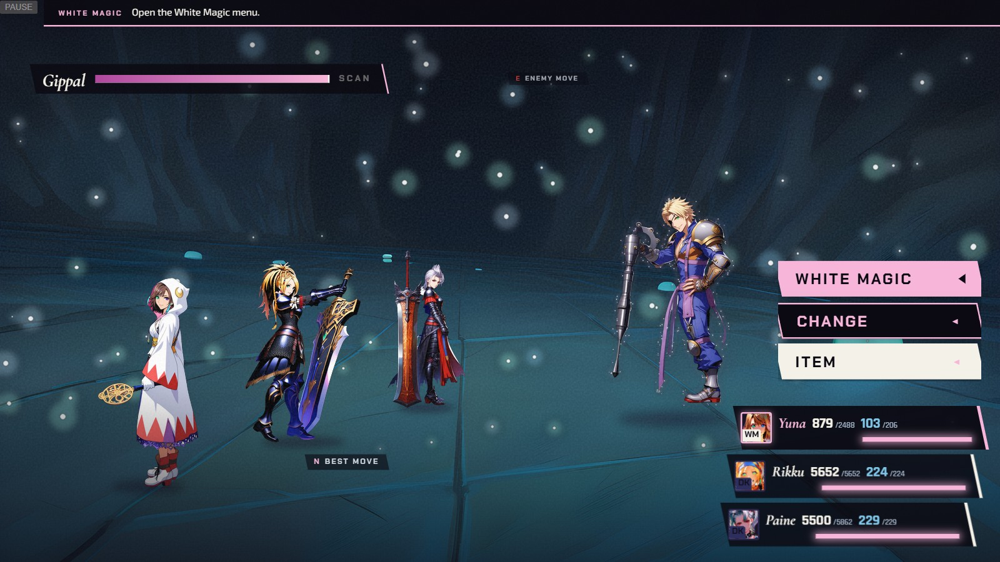

5/5
Bullseye next
9/16 of current HP · cannot KO
C
Marks in the world — shade 2: Gippal's cycle
Composite: O-3 A plate, party at engine positions, real Chapter V HUD · overlays = mockup · numbers illustrative
CONCEPT